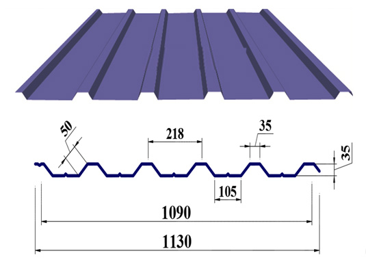

Профнастил
Профнастил – стальной профилированный лист использующийся в качестве кровельного и облицовочного материала. Профнастил используется в промышленном и частном строительстве, как профнастил для забора или кровли. Заборы из профнастила стали популярными и широко применимы в строительстве промышленных и гражданских объектов.
Стеновой и кровельный профнастил используется как материал для быстромонтируемых зданий и позволяет проводить монтажные работы быстро и в краткие сроки. Профнастил можно использовать при разных условиях температуры и влажности климата.
Чаще всего профнастил используют для ограждения, для кровли крыши и как отделочный материал. Профнастил для забора любой маркировки удобен при транспортировке и монтаже. Профнастил для забора и кровли имеет богатую гамму цветов, что позволяет с легкостью подобрать цвет гармонирующий с внешним видом дома и всей территорией усадьбы. Большое внимание наши клиенты уделяют критерию, который является не маловажным то, что профнастил для забора противоустойчив погодным условиям. Используя наш профнастил для заборов и кровли, вы можете быть уверенны в надежности и долговечности устанавливаемого покрытия и ограждения.
Вы ищите где купить профнастил в Киеве или вас интересует профнастил от производителя? Тогда мы сможем предложить вам лучшие варианты.
Профнастил ПС 8
Технические характеристики
| Min длина листа | 350 мм |
| Max длина листа | 6000 мм |
| Полная ширина | 1205 мм |
| Полезная ширина | 1160 мм |
| Высота | 8 мм |
| Толщина метала | 0,4-0,55 мм |
Профнастил ПС 8 является экономичным профилированным листовым покрытием, который обладает широким спектром применения в строительстве. Профнастил ПС8 представляет собой оцинкованный стальной лист, который изготовляется под заказ клиента. Может быть просто оцинкованным или с полимерным покрытием. Профнастил ПС 8 в строительстве чаще всего используется при монтаже стен складов, ангаров, торговых павильонов.
Профнастил ПС 10U
Технические характеристики
| Min длина листа | 350 мм |
| Max длина листа | 6 000 мм |
| Полная ширина | 1 185 мм |
| Полезная ширина | 1 155 мм |
| Высота | 10 мм |
| Толщина метала | 0,4-0,55 мм |
Профнастил ПС 10U является экономичным профилированным листовым покрытием, который обладает широким спектром применения в строительстве. Профнастил ПС 10U представляет собой оцинкованный стальной лист, который изготовляется под заказ клиента. Может быть просто оцинкованным или с полимерным покрытием. Профнастил ПС 10U в строительстве чаще всего используется при монтаже стен складов, ангаров, торговых павильовнов.
Профнастил ПС/ПК 18

Технические характеристики
| Min длина листа | 350 мм |
| Max длина листа | 9000 мм |
| Полная ширина листа | 1180 мм |
| Полезная ширина листа | 1110 мм |
| Высота | 16,5 мм |
| Толщина метала | 0,40-0,70 мм |
Профнастил ПС/ПК 18 применяется как стеновой и облицовочный материал для стен, перегородок, подвесных потолков, ограждений, а также как кровельный материал при достаточно больших углах наклона скатов кровли. Профнастил ПС/ПК 18 наиболее универсальный, так как может использоваться на кровлю и фасады.
Профнастил ПК 35
Технические характеристики
| Min длина листа | 1 000 мм |
| Max длина листа | 12 000 мм |
| Полная ширина листа | 1 130 мм |
| Полезная ширина листа | 1 090 мм |
| Высота | 35 мм |
| Толщина метала | 0,40 — 0,70 мм |
Профнастил ПК 35 может применятся для всех видов и типов кровли. Профнастил ПК 35 может применятся как несъемная опалубка, для монолитных перекрытий.
Профнастил ПК 57
Технические характеристики
| Min длина листа | 1 000 мм |
| Max длина листа | 12 000 мм |
| Полная ширина листа | 1 040 мм |
| Полезная ширина листа | 1 000 мм |
| Высота | 57 мм |
| Толщина метала | 0,40-0,70 мм |
Профнастил ПК 57 применяется как кровельный материал с допустимым шагом несущей обрешетки до 3 м. Считается, что соотношение цена/площадь/покрытие — самое удачное. Профнастил ПК 57 может применяться как несъемная опалубка, для монолитных перекрытий.